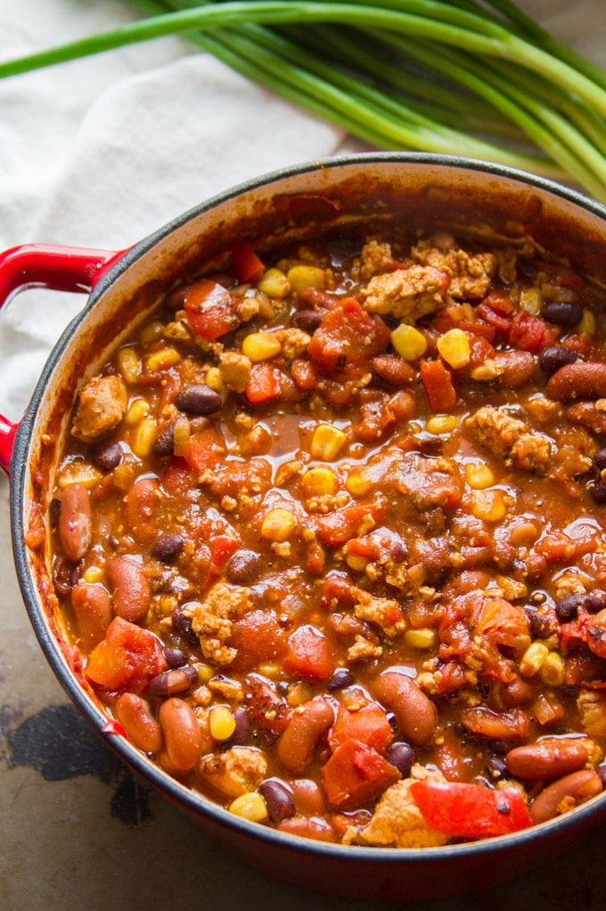

Tofu Chili

Description
This is a meal, both delicious and healthy, which you and your loved ones will enjoy.
Ingredients
- tofu
- chickpeas
- kidney beans
- tomato sauce
- McCormick's Hot Chili Spice Packet
- optional: curry powder
- definitely optional: ghost peppers
Steps
- Put a tab of oil into the pan and allow to simmer.
- Then place the frozen block of chili into the sizzling oil. Break apart with a wooden spoon.
- Once the tofu has crumbled, apply all spices/peppers and stir.
- Then add tomato ingredients.
- Finally add the legumes and lower the heat.
- Let simmer for one hour while stirring occassionally.
- Serve and enjoy.